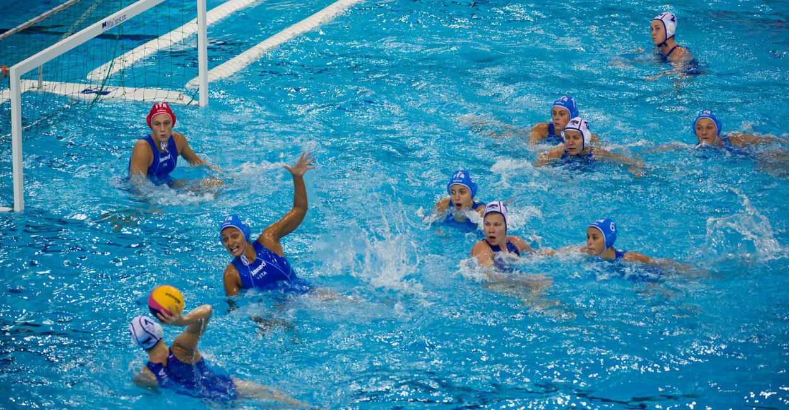

Ik ben Xander v.d. Boogaard
Mijn naam is Xander van den boogaard en hier is wat algemene informatie over mij.
Hier is een overzicht van mijn hobby's
Mijn naam is Xander van den boogaard en hier is wat algemene informatie over mij.
Hier is een overzicht van mijn hobby's
Een van mijn grootste hobby's is waterpolo. Zelf speel ik zelf in een club genaamd: Zwem Vereniging de Seuters (ZVS afgekord). Om op de site van mijn zwem Vereniging te komen Klik hier Waterpolo is een teamsport en ik zit zelf In de heren 1.
Gamen is natuurlijk ook een hobby van mij. Maakt mij niet uit wat voor soort game het is. of het nou een zoek spel of een schiet spelers is ik vind het bijde leuk. ik ben ook een groot fan van de Proffesor Layton games waar je puzzels op moet lossen om verder te gaan.
Ik hou wel van een goed boek. Momenteel lees ik een boekenreeks genaamd: De strijd om Elementia. Dat gaat over een groep spelers die de wereld proberen terug te krijgen van de zo genaamde "noctura" stam. Jse hebt 4 delen van het boek met allemaal ongeveer 400 bladzijdes. Wat ook een leuke boekenreeks is volgens mijn mening is Het leven van een loser. Daar heb je veel delen van. dat gaat over een jongen die een dagboek bijhoudt
Puzzelen is ook een hoby van mij. Sudoku's en woordzoekers vind ik het leukst. maar een leg puzzel is ook leuk. Wat ik ook best
leuk vind is zo'n spel dat je voorwerpen moet vinden om verder te komen.